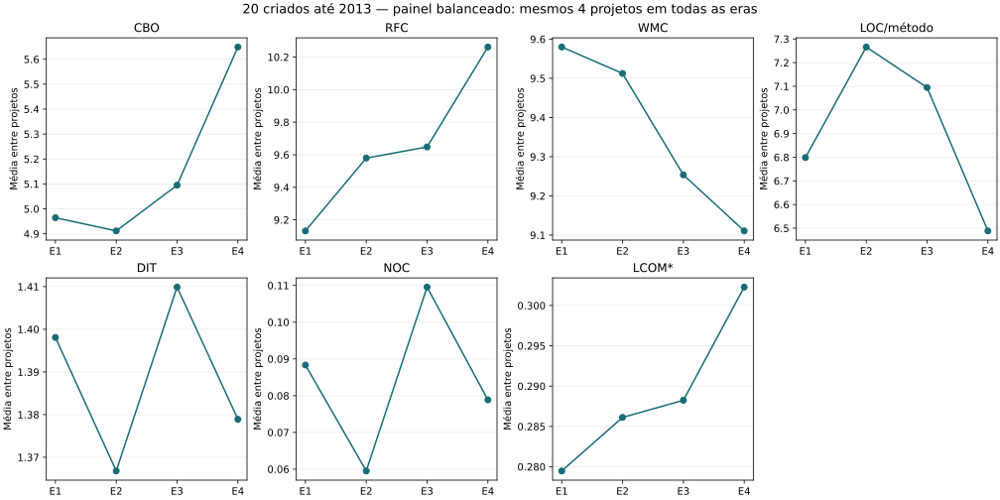
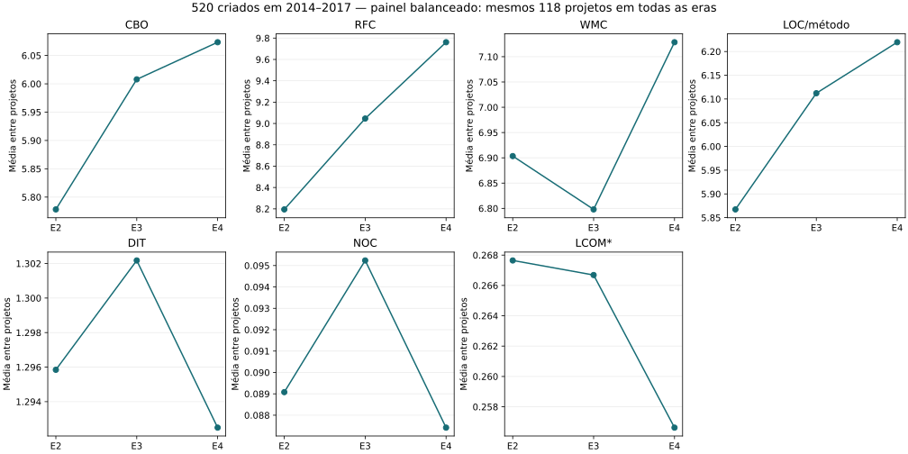

TCC · seleção original · acompanhamento dos mesmos repositórios
540 projetos Spring: o que mudou entre as eras?
Coleta concluída: todas as posições previstas foram registradas. Auditoria independente aprovada.
A base original contém 38.456 projetos. O filtro de criação até 31/12/2017 mantém 540: 20 criados até 2013, acompanhados em quatro eras, e 520 criados em 2014–2017, acompanhados em três. São 1.640 posições projeto–era, sem sorteio e sem substituição. Cada posição usa o último commit da linha principal dentro daquela era.
E1: 2009–2013 · E2: 2014–2017 · E3: 2018–2021 · E4: 2022 até 2026-10-15T20:08:24.130378+00:00 (parcial, UTC). A criação seleciona os projetos; a data do snapshot determina a época do código.
1. Quantos projetos e snapshots entraram?
“Registrados” inclui falhas e ausências. “Com snapshot” indica SHA recuperado; “elegíveis” são as versões que passaram por todos os critérios de comparação. Os totais somam posições por era, enquanto os projetos únicos continuam sendo 540.
| Era | Previstos | Registrados | Com snapshot | Elegíveis CK | Sem commit na era | Falhas | CK parcial | Datas inconsistentes |
|---|---|---|---|---|---|---|---|---|
| E1 | 20 | 20 | 20 | 6 | 0 | 0 | 0 | 0 |
| E2 | 540 | 540 | 525 | 162 | 13 | 3 | 0 | 0 |
| E3 | 540 | 540 | 472 | 210 | 66 | 3 | 1 | 0 |
| E4 | 540 | 540 | 443 | 206 | 95 | 3 | 0 | 0 |
| Total · 4 eras | 1640 | 1640 | 1460 | 584 | 174 | 9 | 1 | 0 |
Elegibilidade: Spring confirmado naquela versão, pelo menos 2.000 LOC e dez arquivos Java, cobertura completa no diagnóstico adotado e as sete métricas disponíveis. Arquivos são caminhos Java distintos; LOC conta linhas físicas com código uma vez por arquivo. Falhas e valores ausentes não viram zero.
2. Médias das métricas em cada era
Cada projeto elegível tem o mesmo peso. Primeiro calcula-se a média de classes ou métodos do projeto; depois, a média entre projetos. As médias gerais incluem produção e testes; as medidas separadas estão nos dados completos. O conjunto elegível pode mudar entre eras: esta tabela sozinha não prova evolução dos mesmos projetos.
| Era | Projetos | CBO | RFC | WMC | LOC/método | DIT | NOC | LCOM* |
|---|---|---|---|---|---|---|---|---|
| E1 | 6 | 5,103 | 8,460 | 8,415 | 6,455 | 1,373 | 0,091 | 0,274 |
| E2 | 162 | 5,773 | 8,285 | 7,416 | 5,847 | 1,291 | 0,084 | 0,276 |
| E3 | 210 | 5,956 | 8,779 | 7,024 | 5,986 | 1,302 | 0,092 | 0,264 |
| E4 | 206 | 6,150 | 9,663 | 7,017 | 6,225 | 1,297 | 0,088 | 0,257 |
O que cada métrica mede?
CBO: acoplamento entre classes. RFC: métodos potencialmente envolvidos nas respostas da classe. WMC: complexidade dos métodos da classe. LOC/método: tamanho médio dos métodos. DIT: profundidade da herança. NOC: quantidade de subclasses diretas. LCOM*: falta de coesão na variante adotada pelo instrumento. Nenhuma dessas medidas, isoladamente, é uma nota de maturidade ou desempenho de execução.
3. Comparação dos mesmos projetos
As linhas abaixo usam apenas IDs elegíveis nas duas eras comparadas. “Diferença” é a média de depois menos antes. Valores positivos indicam aumento; negativos, redução. Isso não significa automaticamente melhora ou piora.
Quatro verificações para cada um dos 20 projetos antigos
| Projeto | E1 | E2 | E3 | E4 |
|---|---|---|---|---|
| apache/camel | 2013-12-30 · Spring tradicional · fora da comparação principal | 2017-12-28 · Spring Boot · fora da comparação principal | 2021-12-31 · Spring tradicional · fora da comparação principal | 2026-10-15 · Spring Boot · fora da comparação principal |
| citrusframework/citrus | 2013-12-20 · Spring tradicional · elegível | 2017-12-22 · Spring tradicional · elegível | 2021-12-20 · Spring tradicional · elegível | 2026-10-15 · Spring tradicional · elegível |
| Atmosphere/atmosphere | 2013-12-20 · Não confirmado · fora da comparação principal | 2017-12-19 · Não confirmado · fora da comparação principal | 2021-12-07 · Não confirmado · fora da comparação principal | 2026-10-15 · Spring Boot · fora da comparação principal |
| apereo/cas | 2013-12-29 · Spring tradicional · elegível | 2017-12-31 · Não confirmado · fora da comparação principal | 2021-12-31 · Não confirmado · fora da comparação principal | 2026-10-15 · Spring Boot · elegível |
| sivaprasadreddy/sivalabs-blog-samples-code | 2013-11-18 · Spring tradicional · fora da comparação principal | 2015-10-15 · Spring Boot · elegível | 2018-02-20 · Spring Boot · elegível | 2026-08-30 · Spring Boot · fora da comparação principal |
| BroadleafCommerce/BroadleafCommerce | 2013-12-27 · Spring tradicional · elegível | 2017-12-21 · Spring Boot · elegível | 2021-12-27 · Spring Boot · elegível | 2026-10-13 · Spring Boot · elegível |
| springfox/springfox | 2013-12-31 · Spring tradicional · elegível | 2017-12-28 · Spring Boot · elegível | 2020-10-14 · Spring Boot · elegível | Sem commit na era |
| pac4j/spring-security-pac4j | 2013-12-30 · Spring tradicional · fora da comparação principal | 2017-09-07 · Spring tradicional · fora da comparação principal | 2021-12-22 · Spring tradicional · fora da comparação principal | 2026-10-15 · Spring tradicional · fora da comparação principal |
| surajcm/Poseidon | 2013-08-21 · Não confirmado · fora da comparação principal | 2017-07-16 · Spring tradicional · elegível | 2021-12-15 · Não confirmado · fora da comparação principal | 2026-07-05 · Não confirmado · fora da comparação principal |
| ron190/jsql-injection | 2013-09-27 · Não confirmado · fora da comparação principal | 2017-12-16 · Não confirmado · fora da comparação principal | 2021-05-25 · Somente testes · fora da comparação principal | 2026-07-11 · Somente testes · fora da comparação principal |
| prayagupa/retailstore-microservice | 2013-09-24 · Spring tradicional · fora da comparação principal | 2017-10-05 · Spring Boot · fora da comparação principal | 2021-09-14 · Spring Boot · fora da comparação principal | 2026-04-04 · Spring Boot · fora da comparação principal |
| spring-projects/spring-boot | 2013-12-31 · Código do framework · fora da comparação principal | 2017-12-30 · Código do framework · fora da comparação principal | 2021-12-30 · Código do framework · fora da comparação principal | 2026-10-15 · Código do framework · fora da comparação principal |
| apache/causeway | 2013-12-23 · Não confirmado · fora da comparação principal | 2017-12-31 · Não confirmado · fora da comparação principal | 2021-12-31 · Spring Boot · elegível | 2026-10-15 · Spring Boot · elegível |
| hawtio/hawtio | 2013-12-31 · Spring tradicional · elegível | 2017-12-28 · Spring Boot · elegível | 2021-12-20 · Spring Boot · elegível | 2026-10-05 · Spring Boot · elegível |
| coherence-community/coherence-spring | 2013-09-10 · Spring tradicional · fora da comparação principal | 2017-07-27 · Spring tradicional · fora da comparação principal | 2021-12-23 · Spring Boot · elegível | 2026-04-22 · Spring Boot · elegível |
| spring-guides/gs-rest-service | 2013-12-12 · Spring Boot · fora da comparação principal | 2017-11-30 · Spring Boot · fora da comparação principal | 2021-10-01 · Spring Boot · fora da comparação principal | 2026-09-01 · Spring Boot · fora da comparação principal |
| Netflix/genie | 2013-12-12 · Não confirmado · fora da comparação principal | 2017-12-14 · Spring Boot · elegível | 2021-12-14 · Spring Boot · elegível | 2026-09-30 · Spring Boot · elegível |
| jeecgboot/MiniDao | 2013-12-31 · Spring tradicional · fora da comparação principal | 2017-08-23 · Spring tradicional · fora da comparação principal | 2021-08-19 · Spring Boot · elegível | 2026-09-28 · Spring Boot · elegível |
| ralscha/spring4ws-demos | 2013-12-29 · Spring tradicional · elegível | 2017-12-01 · Spring Boot · elegível | 2021-12-22 · Spring Boot · elegível | 2026-09-17 · Spring Boot · elegível |
| dschadow/JavaSecurity | 2013-12-30 · Não confirmado · fora da comparação principal | 2017-12-03 · Spring Boot · elegível | 2021-12-29 · Spring Boot · elegível | 2026-10-15 · Spring Boot · elegível |
Baixar SHA, datas, sete métricas e motivos por versão dos 20 antigos.
Todos os 540
| Comparação | Métrica | Mesmos projetos | Média antes | Média depois | Diferença |
|---|---|---|---|---|---|
| E1 → E2 | CBO | 5 | 5,041 | 4,951 | -0,089 |
| E1 → E2 | RFC | 5 | 8,578 | 8,803 | 0,225 |
| E1 → E2 | WMC | 5 | 8,810 | 8,656 | -0,155 |
| E1 → E2 | LOC/método | 5 | 6,501 | 6,697 | 0,196 |
| E1 → E2 | DIT | 5 | 1,337 | 1,312 | -0,026 |
| E1 → E2 | NOC | 5 | 0,076 | 0,054 | -0,022 |
| E1 → E2 | LCOM* | 5 | 0,263 | 0,273 | 0,010 |
| E1 → E3 | CBO | 5 | 5,041 | 5,195 | 0,154 |
| E1 → E3 | RFC | 5 | 8,578 | 9,245 | 0,666 |
| E1 → E3 | WMC | 5 | 8,810 | 8,732 | -0,078 |
| E1 → E3 | LOC/método | 5 | 6,501 | 6,558 | 0,057 |
| E1 → E3 | DIT | 5 | 1,337 | 1,352 | 0,014 |
| E1 → E3 | NOC | 5 | 0,076 | 0,096 | 0,020 |
| E1 → E3 | LCOM* | 5 | 0,263 | 0,284 | 0,021 |
| E1 → E4 | CBO | 5 | 5,055 | 6,512 | 1,457 |
| E1 → E4 | RFC | 5 | 8,880 | 10,601 | 1,721 |
| E1 → E4 | WMC | 5 | 8,952 | 8,077 | -0,875 |
| E1 → E4 | LOC/método | 5 | 6,684 | 6,695 | 0,012 |
| E1 → E4 | DIT | 5 | 1,428 | 1,401 | -0,027 |
| E1 → E4 | NOC | 5 | 0,104 | 0,104 | 0,000 |
| E1 → E4 | LCOM* | 5 | 0,290 | 0,287 | -0,002 |
| E2 → E3 | CBO | 146 | 5,715 | 5,915 | 0,199 |
| E2 → E3 | RFC | 146 | 8,167 | 8,868 | 0,701 |
| E2 → E3 | WMC | 146 | 7,280 | 7,133 | -0,147 |
| E2 → E3 | LOC/método | 146 | 5,793 | 5,962 | 0,169 |
| E2 → E3 | DIT | 146 | 1,289 | 1,294 | 0,006 |
| E2 → E3 | NOC | 146 | 0,084 | 0,092 | 0,008 |
| E2 → E3 | LCOM* | 146 | 0,268 | 0,268 | -0,001 |
| E2 → E4 | CBO | 129 | 5,829 | 6,117 | 0,289 |
| E2 → E4 | RFC | 129 | 8,367 | 9,821 | 1,454 |
| E2 → E4 | WMC | 129 | 6,959 | 7,162 | 0,202 |
| E2 → E4 | LOC/método | 129 | 5,985 | 6,273 | 0,288 |
| E2 → E4 | DIT | 129 | 1,299 | 1,295 | -0,004 |
| E2 → E4 | NOC | 129 | 0,088 | 0,087 | -0,001 |
| E2 → E4 | LCOM* | 129 | 0,270 | 0,260 | -0,010 |
| E3 → E4 | CBO | 182 | 6,027 | 6,127 | 0,101 |
| E3 → E4 | RFC | 182 | 9,022 | 9,598 | 0,576 |
| E3 → E4 | WMC | 182 | 6,876 | 7,115 | 0,238 |
| E3 → E4 | LOC/método | 182 | 6,157 | 6,229 | 0,072 |
| E3 → E4 | DIT | 182 | 1,315 | 1,307 | -0,007 |
| E3 → E4 | NOC | 182 | 0,097 | 0,090 | -0,007 |
| E3 → E4 | LCOM* | 182 | 0,265 | 0,258 | -0,007 |
20 criados até 2013
| Comparação | Métrica | Mesmos projetos | Média antes | Média depois | Diferença |
|---|---|---|---|---|---|
| E1 → E2 | CBO | 5 | 5,041 | 4,951 | -0,089 |
| E1 → E2 | RFC | 5 | 8,578 | 8,803 | 0,225 |
| E1 → E2 | WMC | 5 | 8,810 | 8,656 | -0,155 |
| E1 → E2 | LOC/método | 5 | 6,501 | 6,697 | 0,196 |
| E1 → E2 | DIT | 5 | 1,337 | 1,312 | -0,026 |
| E1 → E2 | NOC | 5 | 0,076 | 0,054 | -0,022 |
| E1 → E2 | LCOM* | 5 | 0,263 | 0,273 | 0,010 |
| E1 → E3 | CBO | 5 | 5,041 | 5,195 | 0,154 |
| E1 → E3 | RFC | 5 | 8,578 | 9,245 | 0,666 |
| E1 → E3 | WMC | 5 | 8,810 | 8,732 | -0,078 |
| E1 → E3 | LOC/método | 5 | 6,501 | 6,558 | 0,057 |
| E1 → E3 | DIT | 5 | 1,337 | 1,352 | 0,014 |
| E1 → E3 | NOC | 5 | 0,076 | 0,096 | 0,020 |
| E1 → E3 | LCOM* | 5 | 0,263 | 0,284 | 0,021 |
| E1 → E4 | CBO | 5 | 5,055 | 6,512 | 1,457 |
| E1 → E4 | RFC | 5 | 8,880 | 10,601 | 1,721 |
| E1 → E4 | WMC | 5 | 8,952 | 8,077 | -0,875 |
| E1 → E4 | LOC/método | 5 | 6,684 | 6,695 | 0,012 |
| E1 → E4 | DIT | 5 | 1,428 | 1,401 | -0,027 |
| E1 → E4 | NOC | 5 | 0,104 | 0,104 | 0,000 |
| E1 → E4 | LCOM* | 5 | 0,290 | 0,287 | -0,002 |
| E2 → E3 | CBO | 8 | 5,733 | 5,554 | -0,178 |
| E2 → E3 | RFC | 8 | 8,839 | 8,664 | -0,175 |
| E2 → E3 | WMC | 8 | 7,588 | 7,486 | -0,102 |
| E2 → E3 | LOC/método | 8 | 6,437 | 6,165 | -0,271 |
| E2 → E3 | DIT | 8 | 1,299 | 1,310 | 0,012 |
| E2 → E3 | NOC | 8 | 0,060 | 0,084 | 0,025 |
| E2 → E3 | LCOM* | 8 | 0,277 | 0,272 | -0,006 |
| E2 → E4 | CBO | 6 | 5,685 | 5,843 | 0,158 |
| E2 → E4 | RFC | 6 | 9,971 | 10,014 | 0,043 |
| E2 → E4 | WMC | 6 | 8,219 | 7,899 | -0,320 |
| E2 → E4 | LOC/método | 6 | 7,146 | 6,463 | -0,684 |
| E2 → E4 | DIT | 6 | 1,354 | 1,334 | -0,019 |
| E2 → E4 | NOC | 6 | 0,067 | 0,076 | 0,009 |
| E2 → E4 | LCOM* | 6 | 0,284 | 0,272 | -0,012 |
| E3 → E4 | CBO | 9 | 5,505 | 5,920 | 0,415 |
| E3 → E4 | RFC | 9 | 9,375 | 10,086 | 0,711 |
| E3 → E4 | WMC | 9 | 8,445 | 8,593 | 0,148 |
| E3 → E4 | LOC/método | 9 | 6,959 | 6,701 | -0,258 |
| E3 → E4 | DIT | 9 | 1,412 | 1,379 | -0,033 |
| E3 → E4 | NOC | 9 | 0,114 | 0,092 | -0,022 |
| E3 → E4 | LCOM* | 9 | 0,258 | 0,260 | 0,003 |
520 criados em 2014–2017
| Comparação | Métrica | Mesmos projetos | Média antes | Média depois | Diferença |
|---|---|---|---|---|---|
| E2 → E3 | CBO | 138 | 5,714 | 5,936 | 0,221 |
| E2 → E3 | RFC | 138 | 8,128 | 8,880 | 0,752 |
| E2 → E3 | WMC | 138 | 7,262 | 7,112 | -0,150 |
| E2 → E3 | LOC/método | 138 | 5,756 | 5,950 | 0,194 |
| E2 → E3 | DIT | 138 | 1,288 | 1,294 | 0,006 |
| E2 → E3 | NOC | 138 | 0,086 | 0,092 | 0,007 |
| E2 → E3 | LCOM* | 138 | 0,268 | 0,267 | -0,001 |
| E2 → E4 | CBO | 123 | 5,836 | 6,131 | 0,295 |
| E2 → E4 | RFC | 123 | 8,289 | 9,812 | 1,523 |
| E2 → E4 | WMC | 123 | 6,898 | 7,126 | 0,228 |
| E2 → E4 | LOC/método | 123 | 5,928 | 6,264 | 0,336 |
| E2 → E4 | DIT | 123 | 1,296 | 1,293 | -0,003 |
| E2 → E4 | NOC | 123 | 0,089 | 0,087 | -0,002 |
| E2 → E4 | LCOM* | 123 | 0,269 | 0,259 | -0,010 |
| E3 → E4 | CBO | 173 | 6,054 | 6,138 | 0,084 |
| E3 → E4 | RFC | 173 | 9,004 | 9,573 | 0,569 |
| E3 → E4 | WMC | 173 | 6,795 | 7,038 | 0,243 |
| E3 → E4 | LOC/método | 173 | 6,115 | 6,204 | 0,089 |
| E3 → E4 | DIT | 173 | 1,310 | 1,304 | -0,006 |
| E3 → E4 | NOC | 173 | 0,096 | 0,090 | -0,006 |
| E3 → E4 | LCOM* | 173 | 0,265 | 0,258 | -0,007 |
4. Trajetórias com composição constante
Estes gráficos usam o painel balanceado: somente projetos elegíveis em todas as eras da sua coorte. O número pode ser menor porque uma única versão inelegível impede a entrada neste gráfico; as outras medições continuam disponíveis nas demais tabelas.


5. Evidências de IA em E4
A classificação é feita no histórico e nos arquivos disponíveis até o snapshot. “Sem evidência detectada” significa que o detector não encontrou os sinais procurados; não comprova ausência de uso. “Indeterminada” indica que não há classificação utilizável, por exemplo por falha ou ausência de snapshot.
| Classificação | Entre os 540 previstos | Também elegíveis CK |
|---|---|---|
| Com evidência | 94 | 49 |
| Sem evidência detectada | 349 | 157 |
| Indeterminada | 97 | 0 |
n_a é a quantidade de projetos elegíveis com evidência; n_b, a quantidade sem evidência detectada. As médias dos grupos abaixo podem refletir tamanho, domínio, framework e equipe, além de possíveis práticas com IA.
| Métrica | n_a · com evidência | n_b · sem evidência | Média A | Média B | Média A − B |
|---|---|---|---|---|---|
| CBO | 49 | 157 | 6,580 | 6,016 | 0,564 |
| RFC | 49 | 157 | 11,767 | 9,007 | 2,760 |
| WMC | 49 | 157 | 8,142 | 6,667 | 1,475 |
| LOC/método | 49 | 157 | 6,468 | 6,149 | 0,319 |
| DIT | 49 | 157 | 1,334 | 1,286 | 0,048 |
| NOC | 49 | 157 | 0,098 | 0,084 | 0,014 |
| LCOM* | 49 | 157 | 0,276 | 0,251 | 0,025 |
O porte dos grupos também precisa ser considerado. LOC total abaixo é o tamanho do código de produção e testes, distinto de LOC médio por método. Esta comparação não controla tamanho nem demonstra efeito da IA.
| Grupo elegível em E4 | Projetos | Média de LOC totais | Média de arquivos Java |
|---|---|---|---|
| Com evidência | 49 | 125.578,286 | 1.472,429 |
| Sem evidência detectada | 157 | 15.222,127 | 273,478 |
6. Mudanças de framework e evidência
As transições abaixo comparam endpoints adjacentes dos mesmos projetos elegíveis. O surgimento de um sinal entre duas versões delimita uma observação; não data exatamente o primeiro uso. Boot indica presença declarada em algum módulo incluído, possivelmente um exemplo ou integração; não comprova migração de toda a arquitetura nem causalidade.
Configuração Spring / Spring Boot
| Eras | Transição observada | Métrica | Pares | Antes | Depois | Diferença |
|---|---|---|---|---|---|---|
| E1 → E2 | Spring tradicional → Spring Boot | CBO | 4 | 5,123 | 4,863 | -0,260 |
| E1 → E2 | Spring tradicional → Spring Boot | RFC | 4 | 8,475 | 8,641 | 0,166 |
| E1 → E2 | Spring tradicional → Spring Boot | WMC | 4 | 9,530 | 9,410 | -0,120 |
| E1 → E2 | Spring tradicional → Spring Boot | LOC/método | 4 | 6,011 | 6,309 | 0,298 |
| E1 → E2 | Spring tradicional → Spring Boot | DIT | 4 | 1,283 | 1,238 | -0,045 |
| E1 → E2 | Spring tradicional → Spring Boot | NOC | 4 | 0,068 | 0,045 | -0,024 |
| E1 → E2 | Spring tradicional → Spring Boot | LCOM* | 4 | 0,288 | 0,306 | 0,018 |
| E1 → E2 | Spring tradicional → Spring tradicional | CBO | 1 | 4,713 | 5,305 | 0,592 |
| E1 → E2 | Spring tradicional → Spring tradicional | RFC | 1 | 8,993 | 9,451 | 0,459 |
| E1 → E2 | Spring tradicional → Spring tradicional | WMC | 1 | 5,931 | 5,638 | -0,292 |
| E1 → E2 | Spring tradicional → Spring tradicional | LOC/método | 1 | 8,462 | 8,248 | -0,214 |
| E1 → E2 | Spring tradicional → Spring tradicional | DIT | 1 | 1,556 | 1,608 | 0,052 |
| E1 → E2 | Spring tradicional → Spring tradicional | NOC | 1 | 0,108 | 0,093 | -0,015 |
| E1 → E2 | Spring tradicional → Spring tradicional | LCOM* | 1 | 0,162 | 0,141 | -0,021 |
| E2 → E3 | Spring Boot → Spring Boot | CBO | 129 | 5,794 | 5,948 | 0,154 |
| E2 → E3 | Spring Boot → Spring Boot | RFC | 129 | 8,174 | 8,883 | 0,709 |
| E2 → E3 | Spring Boot → Spring Boot | WMC | 129 | 7,142 | 7,121 | -0,021 |
| E2 → E3 | Spring Boot → Spring Boot | LOC/método | 129 | 5,688 | 5,865 | 0,177 |
| E2 → E3 | Spring Boot → Spring Boot | DIT | 129 | 1,283 | 1,292 | 0,009 |
| E2 → E3 | Spring Boot → Spring Boot | NOC | 129 | 0,084 | 0,091 | 0,007 |
| E2 → E3 | Spring Boot → Spring Boot | LCOM* | 129 | 0,269 | 0,269 | 0,000 |
| E2 → E3 | Spring tradicional → Spring Boot | CBO | 9 | 4,373 | 5,509 | 1,136 |
| E2 → E3 | Spring tradicional → Spring Boot | RFC | 9 | 7,470 | 8,640 | 1,170 |
| E2 → E3 | Spring tradicional → Spring Boot | WMC | 9 | 9,539 | 7,613 | -1,926 |
| E2 → E3 | Spring tradicional → Spring Boot | LOC/método | 9 | 6,117 | 6,312 | 0,195 |
| E2 → E3 | Spring tradicional → Spring Boot | DIT | 9 | 1,324 | 1,266 | -0,057 |
| E2 → E3 | Spring tradicional → Spring Boot | NOC | 9 | 0,073 | 0,063 | -0,010 |
| E2 → E3 | Spring tradicional → Spring Boot | LCOM* | 9 | 0,279 | 0,263 | -0,016 |
| E2 → E3 | Spring tradicional → Spring tradicional | CBO | 8 | 5,960 | 5,830 | -0,129 |
| E2 → E3 | Spring tradicional → Spring tradicional | RFC | 8 | 8,841 | 8,887 | 0,046 |
| E2 → E3 | Spring tradicional → Spring tradicional | WMC | 8 | 6,960 | 6,786 | -0,173 |
| E2 → E3 | Spring tradicional → Spring tradicional | LOC/método | 8 | 7,119 | 7,123 | 0,003 |
| E2 → E3 | Spring tradicional → Spring tradicional | DIT | 8 | 1,344 | 1,369 | 0,025 |
| E2 → E3 | Spring tradicional → Spring tradicional | NOC | 8 | 0,104 | 0,143 | 0,038 |
| E2 → E3 | Spring tradicional → Spring tradicional | LCOM* | 8 | 0,249 | 0,251 | 0,003 |
| E3 → E4 | Spring Boot → Spring Boot | CBO | 174 | 6,036 | 6,148 | 0,112 |
| E3 → E4 | Spring Boot → Spring Boot | RFC | 174 | 9,028 | 9,568 | 0,539 |
| E3 → E4 | Spring Boot → Spring Boot | WMC | 174 | 6,880 | 7,116 | 0,235 |
| E3 → E4 | Spring Boot → Spring Boot | LOC/método | 174 | 6,113 | 6,190 | 0,077 |
| E3 → E4 | Spring Boot → Spring Boot | DIT | 174 | 1,312 | 1,306 | -0,006 |
| E3 → E4 | Spring Boot → Spring Boot | NOC | 174 | 0,095 | 0,089 | -0,005 |
| E3 → E4 | Spring Boot → Spring Boot | LCOM* | 174 | 0,265 | 0,258 | -0,007 |
| E3 → E4 | Spring tradicional → Spring Boot | CBO | 4 | 6,269 | 5,771 | -0,498 |
| E3 → E4 | Spring tradicional → Spring Boot | RFC | 4 | 9,360 | 11,812 | 2,452 |
| E3 → E4 | Spring tradicional → Spring Boot | WMC | 4 | 8,449 | 8,659 | 0,209 |
| E3 → E4 | Spring tradicional → Spring Boot | LOC/método | 4 | 7,247 | 7,435 | 0,188 |
| E3 → E4 | Spring tradicional → Spring Boot | DIT | 4 | 1,403 | 1,343 | -0,060 |
| E3 → E4 | Spring tradicional → Spring Boot | NOC | 4 | 0,150 | 0,120 | -0,030 |
| E3 → E4 | Spring tradicional → Spring Boot | LCOM* | 4 | 0,321 | 0,316 | -0,005 |
| E3 → E4 | Spring tradicional → Spring tradicional | CBO | 4 | 5,392 | 5,579 | 0,187 |
| E3 → E4 | Spring tradicional → Spring tradicional | RFC | 4 | 8,415 | 8,708 | 0,293 |
| E3 → E4 | Spring tradicional → Spring tradicional | WMC | 4 | 5,123 | 5,532 | 0,409 |
| E3 → E4 | Spring tradicional → Spring tradicional | LOC/método | 4 | 6,999 | 6,706 | -0,292 |
| E3 → E4 | Spring tradicional → Spring tradicional | DIT | 4 | 1,335 | 1,332 | -0,002 |
| E3 → E4 | Spring tradicional → Spring tradicional | NOC | 4 | 0,135 | 0,104 | -0,031 |
| E3 → E4 | Spring tradicional → Spring tradicional | LCOM* | 4 | 0,182 | 0,197 | 0,016 |
Evidência de IA
| Eras | Transição observada | Métrica | Pares | Antes | Depois | Diferença |
|---|---|---|---|---|---|---|
| E1 → E2 | Sem evidência detectada → Sem evidência detectada | CBO | 5 | 5,041 | 4,951 | -0,089 |
| E1 → E2 | Sem evidência detectada → Sem evidência detectada | RFC | 5 | 8,578 | 8,803 | 0,225 |
| E1 → E2 | Sem evidência detectada → Sem evidência detectada | WMC | 5 | 8,810 | 8,656 | -0,155 |
| E1 → E2 | Sem evidência detectada → Sem evidência detectada | LOC/método | 5 | 6,501 | 6,697 | 0,196 |
| E1 → E2 | Sem evidência detectada → Sem evidência detectada | DIT | 5 | 1,337 | 1,312 | -0,026 |
| E1 → E2 | Sem evidência detectada → Sem evidência detectada | NOC | 5 | 0,076 | 0,054 | -0,022 |
| E1 → E2 | Sem evidência detectada → Sem evidência detectada | LCOM* | 5 | 0,263 | 0,273 | 0,010 |
| E2 → E3 | Sem evidência detectada → Sem evidência detectada | CBO | 146 | 5,715 | 5,915 | 0,199 |
| E2 → E3 | Sem evidência detectada → Sem evidência detectada | RFC | 146 | 8,167 | 8,868 | 0,701 |
| E2 → E3 | Sem evidência detectada → Sem evidência detectada | WMC | 146 | 7,280 | 7,133 | -0,147 |
| E2 → E3 | Sem evidência detectada → Sem evidência detectada | LOC/método | 146 | 5,793 | 5,962 | 0,169 |
| E2 → E3 | Sem evidência detectada → Sem evidência detectada | DIT | 146 | 1,289 | 1,294 | 0,006 |
| E2 → E3 | Sem evidência detectada → Sem evidência detectada | NOC | 146 | 0,084 | 0,092 | 0,008 |
| E2 → E3 | Sem evidência detectada → Sem evidência detectada | LCOM* | 146 | 0,268 | 0,268 | -0,001 |
| E3 → E4 | Sem evidência detectada → Com evidência | CBO | 43 | 6,356 | 6,618 | 0,262 |
| E3 → E4 | Sem evidência detectada → Com evidência | RFC | 43 | 10,143 | 11,823 | 1,681 |
| E3 → E4 | Sem evidência detectada → Com evidência | WMC | 43 | 7,799 | 8,496 | 0,697 |
| E3 → E4 | Sem evidência detectada → Com evidência | LOC/método | 43 | 6,407 | 6,470 | 0,063 |
| E3 → E4 | Sem evidência detectada → Com evidência | DIT | 43 | 1,368 | 1,355 | -0,013 |
| E3 → E4 | Sem evidência detectada → Com evidência | NOC | 43 | 0,118 | 0,107 | -0,011 |
| E3 → E4 | Sem evidência detectada → Com evidência | LCOM* | 43 | 0,284 | 0,285 | 0,001 |
| E3 → E4 | Sem evidência detectada → Sem evidência detectada | CBO | 139 | 5,925 | 5,975 | 0,050 |
| E3 → E4 | Sem evidência detectada → Sem evidência detectada | RFC | 139 | 8,676 | 8,910 | 0,234 |
| E3 → E4 | Sem evidência detectada → Sem evidência detectada | WMC | 139 | 6,591 | 6,687 | 0,096 |
| E3 → E4 | Sem evidência detectada → Sem evidência detectada | LOC/método | 139 | 6,080 | 6,154 | 0,074 |
| E3 → E4 | Sem evidência detectada → Sem evidência detectada | DIT | 139 | 1,298 | 1,292 | -0,006 |
| E3 → E4 | Sem evidência detectada → Sem evidência detectada | NOC | 139 | 0,090 | 0,085 | -0,005 |
| E3 → E4 | Sem evidência detectada → Sem evidência detectada | LCOM* | 139 | 0,259 | 0,250 | -0,009 |
7. Dados, limites e reprodução
Esta população já havia passado pelo filtro de atividade de três anos da coleta de setembro. Não representa todos os projetos históricos da comunidade. Metadados atuais, histórico reescrito, versões pequenas, falhas de extração e uso de IA sem vestígios limitam as conclusões. “Framework não confirmado” pode decorrer de configurações dinâmicas que o detector não resolve; não comprova ausência de Spring.
- Lista congelada dos 540
- Os 20 criados até 2013
- Os 520 de 2014–2017
- Todas as medições e motivos de exclusão
- Classificações de IA por snapshot
- IA em E4: uma linha para cada um dos 540 candidatos
- Porte dos grupos com e sem evidência em E4
- Trajetórias individuais dos 20 antigos
- Conferência de vestígios de IA dos projetos antigos
- Médias e cobertura por coorte
- Comparações dos mesmos projetos
- IDs dos painéis balanceados
- Comparações por transição
- Auditoria independente
- Composição e corte congelados
- Decisão do autor
- Versões e hashes dos instrumentos
Gerado em 2026-10-15T20:55:52.073309+00:00. Célula “—” indica valor indisponível. Apresentação descritiva com médias aritméticas.